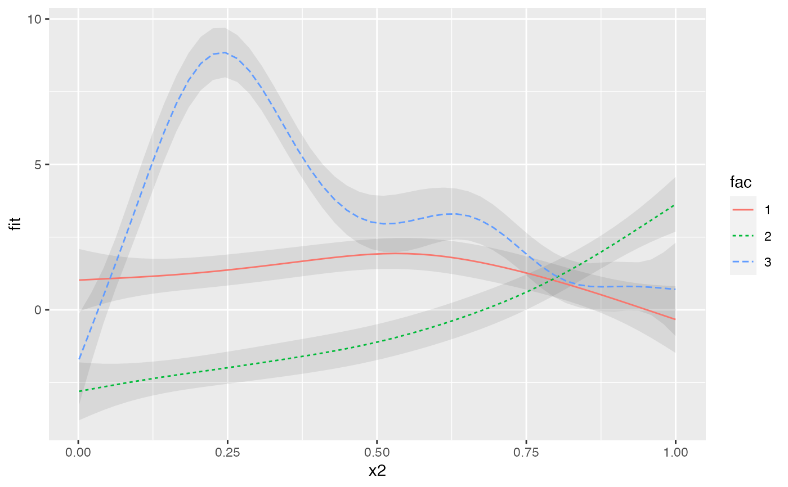

It provides a `geom` for plotting GAM smooths with confidence intervals from the output of predict_gam. It inherits the following aesthetics from a call to ggplot:
The term defining the x-axis.
The fitted values (the fit column in the tibble returned by predict_gam).
The standard error of the fit (the se.fit column in the tibble returned by predict_gam).
geom_smooth_ci(group = NULL, ci_z = 1.96, ci_alpha = 0.1, data = NULL, ...)
| group | The optional grouping factor. |
|---|---|
| ci_z | The z-value for calculating the CIs (the default is |
| ci_alpha | Transparency value of CIs (the default is |
| data | The data to be displayed in this layer. If |
| ... | Arguments passed to |
#>#> #>#> #> #>#>#> Factor `by' variable examplemodel <- gam(y ~ fac + s(x2) + s(x2, by = fac), data = data) # get predictions p <- predict_gam(model) # plot smooths and confidence intervals ggplot(p, aes(x2, fit)) + geom_smooth_ci(fac)